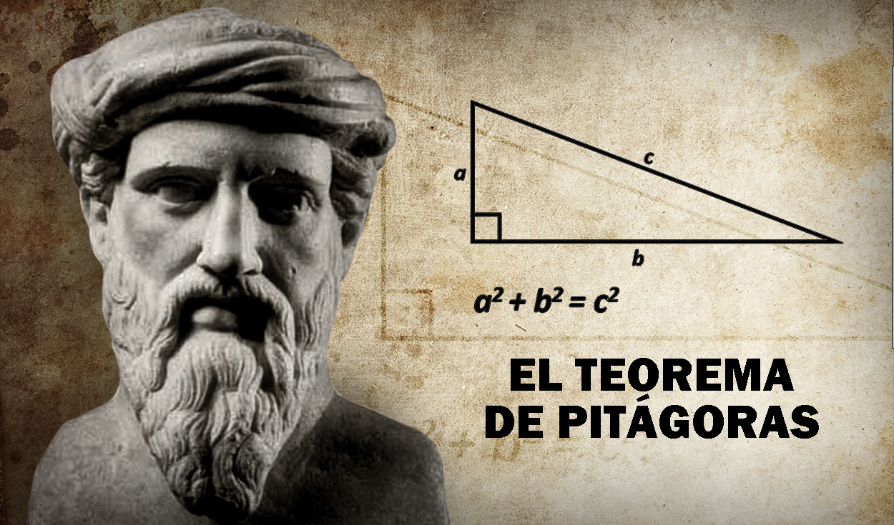
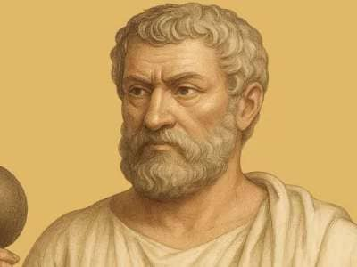

Teorema de Pitágoras
Relación entre los lados de un triángulo rectángulo: a² + b² = c².
Estudiar PitágorasAprende geometría de forma clara, visual y amigable. Elige un teorema y empieza a entenderlo de verdad.

Relación entre los lados de un triángulo rectángulo: a² + b² = c².
Estudiar Pitágoras
Proporcionalidad y semejanza de triángulos. Ideal para calcular alturas.
Estudiar TalesCompara ambos teoremas de un vistazo:
| Característica | Teorema de Tales | Teorema de Pitágoras |
|---|---|---|
| Concepto | Proporcionalidad y semejanza | Relación en triángulos rectángulos |
| Fórmula básica | A / a = B / b | a² + b² = c² |
| Se aplica en | Triángulos con paralelas | Solo triángulos de 90° |
| Uso principal | Alturas y distancias inaccesibles | Distancia diagonal o lado faltante |
Inscríbete a nuestro curso gratuito.
Inscribirme al curso